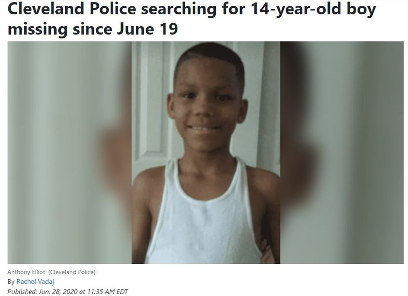

Timeline photos
17-year-old Anthony Elliot was fatally shot in Akron on Sunday.
The mainstream media is not confirming details. But clevelandremembrance.page on Instagram is reporting that he was shot at the Ohio Entertainment Awards.
That post is here:
https://www.instagram.com/p/CzBnFvTOWSU/?utm_source=ig_web_copy_link&igshid=MzRlODBiNWFlZA%3D%3D
They were having HalloweenFest at 2539 Romig Road at 5:30pm. The Beacon Journal said that Anthony was shot in the 2500 block of Romig Road.
Their Instagram is here:
https://www.instagram.com/ohio_entertainment_awards/?hl=en
The picture I posted here was from 2020 when a 14 year old boy had been missing for over a week. His name was Anthony Elliot and he was from Cleveland. The dates seem to match up that it could be the same person.
If all of this is true then the story goes something like this:
Anthony Elliot was a "troubled youth" trying to find places to fit in. Trying to find his way in a world where everything is cut off from him. There is only one path that looks possible from his perspective... guns and drugs.
It's no surprise that he is Black and 17.
The White conservatives will jump in and tell you that what he was missing was a dad. Chances are: his dad is either dead or in prison... because White conservatives (and liberals) put him there because of some involvement in drugs.
It's like taking someone's car away and telling them they need drive to a job otherwise they are going to be homeless.
America has become a cattle chute (sometimes called a squeeze chute or cattle crush) to force our poor young Black men down one path so that they have almost no chance of doing anything other than ending up dead or in prison.
White liberals will just send up Thoughts and Prayers because they can't think of anything else to do.
The fact of the matter is: The System is working just as planned. Poor people are being exterminated before they can breed. Anthony Elliot's murder is a success story.
Are the outlines of the truth beginning to start to become visible for you? Poor people are the problem... world wide. Palestinians, Blacks, Appalachians, homeless.
If you are poor you need to get off the planet. And we will help you with that in a wide variety of ways. We'll take away homeless people's tents. We'll take away Black men through death or prison. We'll evict Black women. We'll blame the entire problem in Israel on Palestinians who have lived in an open-air prison for decades.
We will squeeze you until you can't take it any longer. And then when you act up in the slightest way we will convince the entire world that YOU are the problem, that YOU are the enemy. And then we'll either let them kill you, we will kill you... or we'll send you to prison for the rest of your life.
The Powerful make the rules. Democracy is an illusion. Our representatives lie to us about how they are going to do what we want and then they get right back to the playbook: Push out poor people. Gentrify as much of the world as possible with rich people. Lock up or kill people like Anthony Elliot.
The powerful will let you walk around in solidarity for a while. You can call it a protest if you want. But don't you DARE get out of line. They will then arrest you and chastise you and then blame you for being the real problem in the world. That's the truth of it all.
The powerful would make Jesus the enemy of the people in no time if he ever dared come back here. Our propaganda machines are much better than they were 2000 years ago.
We are all living in a Cattle Chute constructed by rich people. And we just sit in here like docile little cows as they pick us off one by one.